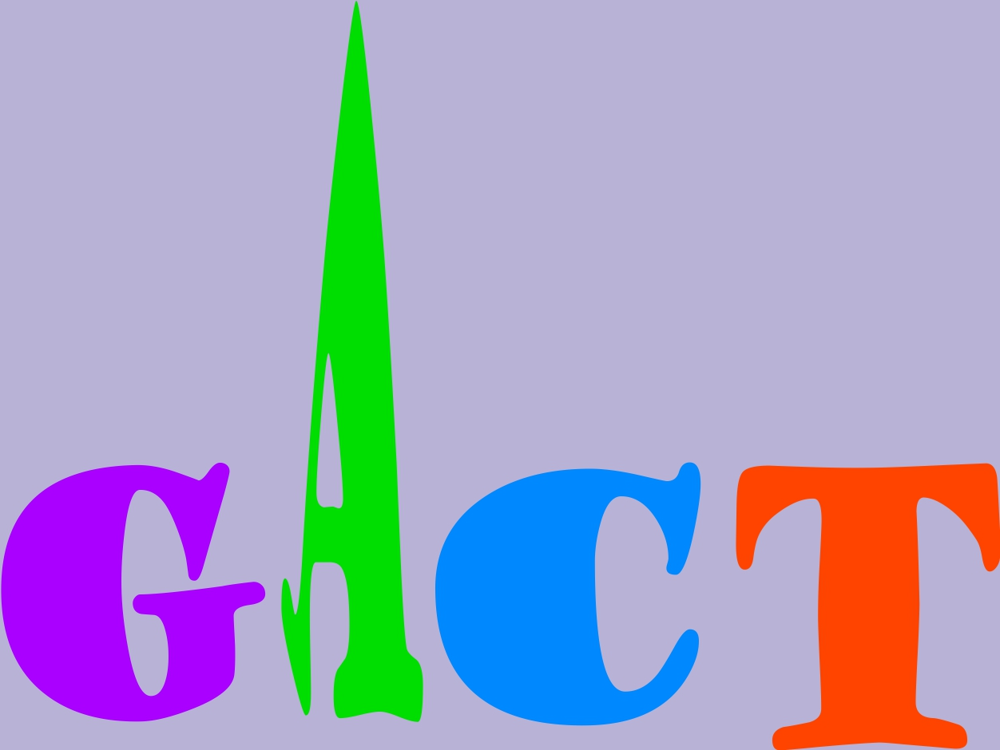

生物信息学网站
by Polaris, 2015(目前仅支持内网访问)
生物信息学工具
1.基因结构信息图形绘制：Paint Gene Structure to SVG Graph
2.蛋白质结构域绘制：Paint Protein Structure to SVG Graph
3.Newick系统进化树绘制：Paint Newick info to Phylogenetic Tree of SVG Graph
4.Newick系统进化树与蛋白结构域综合绘制： Paint Newick Tree and Protein Domain to one SVG Graph